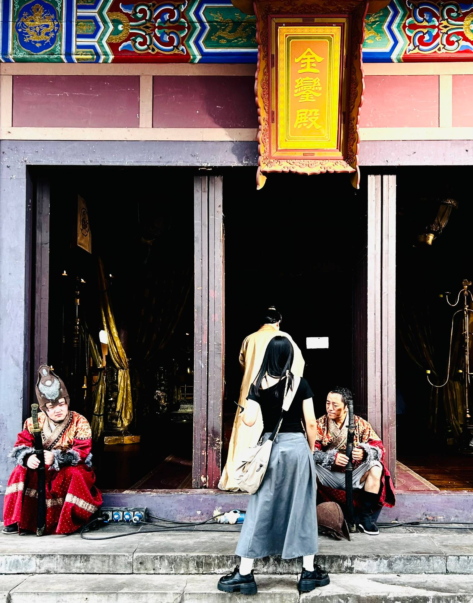

覚えて帰って欲しい3つ
- エンタメ側は「試す」から「量産する」に変わりました：動画生成はもう実験の道具ではありません。中国のショートドラマは7割がAI製とまで言われ、制作費は桁で落ちています。第1回で話したコストの崩壊は、予言ではなく現在の数字になりました。
- ビジネス側は「一人のAI」から「AIのチーム」に変わりました：第3回で手作りしたAI会社が、いまやツール側の標準機能に降りてきています。つまり、君が組織を設計できること自体が価値になる時代に入りました。
- そして、立つ場所を選び直す必要があります：中国では制作費が9割下がっても、制作している人は儲かっていません。売上の8割は広告（投流）に流れます。だからエンタメ産業の7つのレイヤを見て、自分がどこに立つかを決めてください。今日の核心です。
- それでも、変わらないものが1つだけあります：目的を書くのは人間です。道具は半年で入れ替わりますが、ループを回す型とIPを持つという発想は残ります。今日はそこだけ持ち帰ってください。
60分タイムテーブル
| 区切り | 時間 | 内容 | キーワード |
|---|---|---|---|
| 1 | 0–8分 | これまでの4回を、1枚に | 作る／売る／会社にする／動かす |
| 2 | 8–22分 | ★ 最新AI × エンタメ ── 量産フェーズに入った | 動画生成の現在地・IPを育てる・収益化の新ルール |
| 3 | 22–36分 | ★ 中国のAIエンタメ最前線 ── サプライチェーンのどこに立つか | 43万作品・9割超がAI・投流が8割・7つのレイヤ |
| 4 | 36–48分 | ★ 最新AI × ビジネス ── 一人から、チームへ | エージェントのチーム化・社内導入の実数・3つの稼ぎ方 |
| 5 | 48–55分 | 2つを貫く1本の線 ── ループと、人間に残る仕事 | 出力を直すな、ループを直せ |
| 6 | 55–60分 | 最終回クロージング ── 卒業後の宿題 | 1年後、何が君の代わりに働いているか |
先に言っておきます
今日出てくるツール名とサービス名は、半年で入れ替わります。覚えなくて構いません。見てほしいのは名前ではなく、「1本あたりいくらで、1日に何本作れるようになったか」という単価と量産性の変化です。そこだけは、ツールが変わっても効き続けます。
第1部：これまでの4回を、1枚に
最終回は、まず答え合わせから始めます。この4回は、バラバラの話ではなく1本の線でした。
1-14回の地図
| 回 | テーマ | 一行でいうと | 持ち帰り |
|---|---|---|---|
| 第1回 | 作る | AIで制作コストが崩壊した | 個人がIPを作れる ── OPCという選択肢 |
| 第2回 | 売る | 1本のドラマは権利の塊 | 質より棚。1本を10個のビジネスに分解する |
| 第3回 | 会社にする | 役割を文章で書けば、AIは組織になる | CEO／COO／CFO／CMO。会議も議事録も自動 |
| 第4回 | 動かす | 差がつくのはAIの性能ではなく指示 | 4要素 → 流れ → 分解 → スキル化 |
| 第5回 | 使い切る | いまの現在地と、持ち帰る形 | エンタメ／ビジネスの最新 ＋ 5回の総まとめ |
1-2OPCとは何だったか ── ここだけは落とさないでください
第1回・第2回で何度も聞いた言葉です。もう一度だけ確認します。
OPC＝One Person Company（ワンパーソンカンパニー）
AIを使って、企画・制作・販売までを一人で回す会社のことです。
そしてフリーランスとの決定的な違いは、IP（権利）を自分で持っているかどうか。受託は「労働 × 時間」しか売れません。OPCは作ったキャラ・作品・仕組みが資産として残り、何度でも売れます。
第2回でやった「1本の映像を、権利にバラして売る」という発想 ── あれがOPCの本体です。
フリーランス型
依頼を受ける → 作る → 納品する → 報酬
→ 次の依頼を探す（振り出しに戻る）
働いた分だけ。止まれば収入はゼロ。単価の上限は「1日8時間 × 時給」で決まってしまいます。
OPC型
自分で作品・キャラを作る → 権利を持つ
→ 配信・グッズ・ボイス・漫画・ライセンスに分けて売る
→ 反応を見て、次の作品に活かす
作ったものが働きます。1回作れば、切り口の数だけ売り先が増える。これがAIで現実的になった、というのが第1回・第2回の話でした。
1-3この5回は、1本の線でした
並べ直すと、こうなります。第4回でやったタスク分解そのものの形です。
（AIで制作）
（権利に分解）
（組織を書く）
（4要素・分解）
→01へ戻る
答え合わせ
5回を通して教えていたのは、この輪の回し方ひとつです
第1回で「作れる」ことを見せ、第2回で「売り先が10個ある」ことを見せ、第3回で「判断まで任せられる」ことを見せ、第4回で「指示の型」を渡しました。
どれか1つでは回りません。5つがつながって、はじめて自分の外側で回り始めます。今日はその輪に、2026年9月時点の最新の燃料を足します。
→ まずはエンタメ側。この半年で、はっきり段階が変わりました。
第2部：★ 最新AI × エンタメ ── 「試す」から「量産する」へ
第1回で「これから絶対に来る」と話したことが、数字として出てきました。まず現在地を3つの数字で押さえます。
2-1いまの現在地を、3つの数字で
この3つを、1行にすると
「安く作れるようになった」だけでは終わらず、"安く作れるから市場そのものが伸びている"段階に入りました。第1回のとき、自分は「中国はAI動画のコストが30分の1で、だからあれだけ量産できる」と話しました。そのコスト差が、いま日本側にも降りてきています。
2-2動画生成ツールの現在地（2026年9月時点）
名前は覚えなくていいです。見るべきは「1本いくらで、何本作れるか」です。そのうえで、いまの顔ぶれだけ共有します。
量産
Kling など中国系
コストパフォーマンスと量産性で優位とされています。第3回でも話したとおり、自分たちが実際に切り替えた理由もここでした。
→ 本数を出す仕事はこちら側に寄ります。品質
Veo / Runway など
映画的な品質・物理的な自然さで強い。「ここぞの1本」「クライアントに見せる1本」に向きます。
→ 単価の高い仕事はこちら側。注意
ツールは消えます
Sora はウェブ・アプリ版の提供が終了し、API も2026年9月で廃止予定と案内されています。1つのツールに業務を固定すると、終了と同時に止まります。
→ 手順（スキル）側を資産にするのが正解です。だから第4回で「スキルにして配れ」と言いました
ツールが終了しても、「01 文字起こし → 02 切り出し → 03 生成 → 04 サムネ・投稿 → 05 計測」という工程は生き残ります。
死ぬのはツール名だけで、工程を文章にしておけば、中身のツールを差し替えるだけで復活します。ツールに詳しい人ではなく、工程を持っている人が強い ── これが今日いちばん実務的な話です。
2-3現場で何が変わったか ── 自分たちの実例
第1回から追いかけてきた自分たちの制作コストは、こう動きました。
| やり方 | 30分尺（30話）あたり | 1分あたり | 必要な人 |
|---|---|---|---|
| 実写（従来） | 約600万円 | 約20万円 | キャスト・監督・カメラ・編集・制作進行 |
| AIアニメ化 | 約150万円 | 約5万円 | 実質ひとり（＝OPC） |
| 切り抜き・多言語展開 | ほぼ追加費用なし | 数十秒で1本 | AIが自動投稿まで |
エンタメ側の結論
もう「作れるか」は論点ではありません。「何を持つか」が論点です
作れる人が増えた瞬間、作れること自体の価値は下がります。第2回で話したとおり、残るのは権利＝IPを持っている人だけです。
自分たちが実写の作品をAIアニメにして、同じキャラを別の作品にも出し続けているのはそのためです。1本を当てるのではなく、キャラを育てて、次の作品に連れて行く。これが量産時代の勝ち筋です。
2-4★ 新しいルール ── 量産には、はっきり線が引かれました
ここが今日いちばん実務的で、いちばん大事な最新情報です。「AIで量産すれば勝ち」という時期は、もう終わりました。
YouTubeの線引きは「AIを使ったか」ではありません
2026年7月にパートナープログラムのポリシーが改訂され、「満足度の低い、または不快なコンテンツ」「一般的で繰り返しの多いコンテンツ」は収益化不可と明文化されました。
ポイントは、線引きが「AIを使ったかどうか」ではなく「量産的・非独自的かどうか」に置かれていることです。
つまり ── 企画・構成・編集に君の独自性があれば、AIで作っていても問題ありません。テンプレートに流し込んだだけ、AI音声で読み上げただけ、は落ちます。
同じテンプレートに素材を差し替えただけの動画を、1日何十本も出す
いちばん危ないやり方です。数は出ますが、チャンネルごと収益化を失うリスクを背負います。第3回で自動投稿の話をしましたが、自動化していいのは工程であって、企画ではありません。
AIで作った人物に、専門家のふりをさせる
医療・健康・法律・金融・政治といった、視聴者の判断に影響する分野は特に規制されています。エンタメの文脈でも、実在の人物の発言を捏造したように見える合成は開示（ラベル付け）が義務づけられています。
権利の確認をしないまま、既存IPに寄せて作る
AIで「それっぽく」作れてしまう分、事故も増えました。自分たちが自社で権利を持つ作品しか使っていないのは、この一点のためです。持っているものだけで戦う ── これがOPCの安全装置でもあります。
つまり、こう読み替えてください
「AIで量産する」ではなく「AIで、自分の企画を何本も試せるようにする」。量産するのは本数ではなく打席です。第2回で話した「70本作って当たるのは4〜5本」という確率の世界に、安く何度も挑めるようになった ── そう捉えるのが、いちばん正確で、いちばん安全です。
→ では、その量産がいちばん進んでいる国では何が起きているのか。ここから、産業の構造ごと見ていきます。
第3部：★ 中国のAIエンタメ最前線 ── サプライチェーンの、どこに立つか
第1回から「中国はすごい」と言い続けてきました。最終回では、その"すごい"を数字で見て、産業の構造図に落とし、「じゃあ自分はどこに立つのか」まで持っていきます。今日いちばん実利のある話です。

そしていま、この光景そのものが中国の撮影所から急速に減っています ── 横店が受け入れた撮影チームは前年同期比で半減以下、俳優の日当は24万円 → 4.7万円。
これから見る数字は、全部この現場で起きていることです。 撮影：志村（講義用）
3-1まず、この数字を見てください
数字の幅について、正直に
「AI作品の比率」は、出典によって7割と言われたり、9割超と言われたりします。どちらかが間違いというより、数か月単位で比率が上がり続けていると読むのが正確です。第2部で挙げた7割（2026年前半の報道）と、ここでの9割超（1〜8月の当局データ）は、その変化のスピードそのものを示しています。
3-2AIドラマは、どこまで来たのか
「AIっぽい映像」の段階はもう過ぎています。いま起きているのは、制作の中心がAIに移ったという変化です。
日本にいると、こう見えます
「AIで作った映像なんて、まだ使い物にならない」── その会話をしている間に、隣の国では43万本が世に出ました。技術の議論はもう終わっていて、産業の構造の話に移っています。だから今日は、構造の図を見ます。
3-3★ エンタメ産業のサプライチェーン ── 7つのレイヤ
ドラマでも、音楽でも、アニメでも、お金が流れる順番は同じです。この7つの箱のどこかに、必ず自分が立っています。
権利の源
何を作るか
撮影・演者
編集・AI生成
棚を持つ
広告で当てる
課金・IP展開 →01へ
「投流（とうりゅう）」＝ 中国のショートドラマで最重要のレイヤ
作った作品を、TikTok・Google・Metaなどに広告として大量に流し、反応がいいものだけに広告費を集中させる運用のことです。
コンセプトを分解して何百通りもの短尺広告を同時に流し、視聴維持率と課金への転換率で選別する ── これが中国のやり方です。第3回でやった「数字を見て次に反映する」を、広告費の配分でやっていると思ってください。
3-4★ ではお金は、どこに残っているのか
ここが今日いちばん見てほしいところです。制作費が10分の1になっても、制作している人は儲かっていません。
実写ショートドラマ：売上100のうち、どこに消えるか
中国の実写ショートドラマで指摘されてきた収益構造の例です。「制作側の取り分が1割に満たないケースも珍しくない」と報じられています。
※ 中央と右の内訳はおおよその目安です（出典が明示しているのは「投流が8割超」「制作の取り分が1割に満たないケースも」の2点）。収益源そのものは、広告が約半分、残りが課金と商品タイアップと言われています。
出典：DIAMOND ハーバード・ビジネス・レビュー／studio15 ほか
この図から読み取ってほしい一点
コストが下がっても、浮いた分は投流の競争に吸われます
制作費が1/10になれば儲かる、と考えたくなります。でも実際には、安く作れる人が増えた分、同じ視聴者の奪い合いが激しくなり、広告費が上がります。下がったコストは、そのまま広告のセリ値に流れていきます。
つまり ── 「安く作れる」だけでは、1円も残りません。残るのは、権利を持っている人（01・07）と、当てる技術を持っている人（06）です。
3-5レイヤ別・AIで何が起きたか
7つの箱を、1つずつ見ていきます。右端の判定は、3-1と3-4の数字をもとにした自分の見立てです。
IP・原作
AIで何度でも展開できるようになった結果、元の権利を持っていること自体がボトルネックになりました。作れる人が増えるほど、素材の持ち主が強くなります。
企画・脚本
二極化しました。量産用の下書きは実質ゼロ円に。一方で「どれが当たるか」を見極める企画は、本数が増えたぶんむしろ希少になっています。
制作（撮影・演者）
いちばん激しく価格が崩れたレイヤです。横店の撮影チーム半減、俳優の日当24万円→4.7万円。これが数字として出てしまいました。
仕上げ（編集・AI生成）
ツールを触れば誰でもできるようになりました。しかもそのツール自体が1年で入れ替わります。ここだけを職能にすると、毎年ゼロから走り直すことになります。
配信プラットフォーム
棚を持っている側は、作品が増えるほど強くなります。第2回で話した「質より棚」がそのまま効くレイヤ。ただし個人が今から入るのは現実的ではありません。
投流（広告運用・獲得）
売上の8割が流れ込む場所。数百通りの広告を流して当たりを選ぶ仕事で、AIと数字の両方が分かる人が決定的に足りていません。
マネタイズ（課金・IP展開）
1本をグッズ・ボイス・漫画・ライセンスに分解して売るレイヤ。第2回でやった「1本を10個のビジネスに」がここです。作品が増えるほど、分解できる人の価値が上がります。
3-6で、君はどこに立つのか
結論から言います。03と04に"だけ"立ってはいけません。そこは、いま世界でいちばん速く価格が落ちている場所です。
「撮影ができます」「編集ができます」だけで勝負する
技能を否定しているのではありません。それ単体では値段がつかなくなったという話です。横店の数字が、その答え合わせです。必ず01・06・07のどれかと組み合わせて持ってください。
立ち位置 A ── 本命
権利を持つ（01 → 07）
自分のキャラ・作品・世界観を持ち、配信・グッズ・ボイス・ライセンスに分解して売る。第1回からずっと話してきたOPCそのものです。
強み：作れる人が増えるほど、持っている人の価値が上がる。弱み：当たるまで時間がかかる。だから次のBと併走します。立ち位置 B ── いちばん早く食える
数字で当てにいく（06）
投流＝広告運用と数字の分析。何百本の中から当たりを見つけて予算を寄せる仕事です。売上の8割が通る場所なのに、人が足りていません。
今日までの4回が、そのまま武器になります。第3回のAI会社（CMO役の分析）、第4回の4要素と分解 ── あれは全部、このレイヤの仕事です。立ち位置 C ── 残るセンス
当たりを見極める（02の上澄み）
量産の下書きはAIがやります。残るのは「どれを世に出すか」を決める目。1日1000本の時代に、いちばん効く判断です。
鍛え方は1つだけ：たくさん見て、数字で答え合わせをする。第5部のループの話が、そのまま訓練法になります。学生にとっての現実解
Bで食い扶持を作りながら、AとCを自分で育てる。これが、いま21〜22歳で始める人のいちばん勝率の高い順番だと思います。
Bは会社に入っても、フリーでも、すぐ値段がつきます。そしてBをやっていると、Cの目（どの数字がどう動くか）が自然に鍛えられます。その目で、Aを当てにいく ── そういう順番です。
3-7★ ただし ── 量産は、すでに限界が見えています
ここまで「中国すごい」を見てきましたが、現地では逆の話も出始めています。最終回なので、そこまで含めて渡します。
起きていること
新作は1日数十本 → 1000本規模へ
一方で、視聴者の数は限られている
ヒット作が生まれる確率は「宝くじ並み」になったと報じられています。「AIで量産すれば当たる」というフェーズは、もう終わりかけています。
つまり、次の勝負は
量ではなく、当てる。
安く大量に作れるほど、本当に価値のあるものが求められる
中国が証明したのは「安く作れる」ところまでです。「当てる」ところは、まだ誰も勝っていません。ここが、日本の作り手にとってのチャンスだと自分は見ています。
第3部の結論
コストの戦争は終わりました。次は「当てる」戦争です
だから立つべき場所は、安く作れるレイヤ（03・04）ではなく、当てる・持つレイヤ（06・01・07）です。
そして「当てる」に必要なのは、才能ではなく数字を見て次に反映する回し方 ── 第5部で話すループです。中国の43万本は、その練習相手だと思ってください。
→ ここまでがエンタメ産業の構造の話。次はビジネス側 ── こちらは、もっと静かに、もっと大きく変わりました。
第4部：★ 最新AI × ビジネス ── 一人のAIから、AIのチームへ
第3回で手作りした「AI会社」が、この数か月でツール側の標準機能に降りてきました。何が起きたのか、そして個人にとって何を意味するのかを話します。
4-1この1年で起きた、3段跳び
具体的には、この2つが大きい変化です。
01 ── エージェントのチーム化
Claude の最新モデル（Opus 4.6）では、複数のエージェントでチームを組んで1つの仕事に当たらせることが公式機能として案内されています。あわせて、長時間の作業でも文脈が切れないように、AIが自分の作業履歴を要約しながら走り続ける仕組みも入りました。
第3回で「CEO・COO・CFO・CMOを立てて会議させた」あの構成が、手作りではなく標準の作法になったということです。
02 ── 入口の統合
2026年9月16日、Anthropic はチャットと作業用の画面（Cowork）を1つの入口に統合したと報じられました。ユーザーがタブを選ぶのではなく、AI側が「これは調べ物」「これは作業」と振り分ける形です。
つまり ── 「どのツールを開くか」を人間が考える時間すら、削りにきています。
この変化の、本当の意味
AIを"使える"ことは、もう差になりません。組織を設計できるかが差になります
チーム機能が標準になったということは、「誰でもAIのチームを持てる」ということです。全員が同じ道具を持ったとき、差がつくのはどんな役割を置き、何をミッションにし、どこで承認するかという設計だけです。
それは第3回・第4回でやったこと ── 組織を文章で書く力、工程を言葉にする力です。プログラミングではありません。
4-2会社の現場では、何が起きているか
「うちの会社はまだ」と思っているうちに、大きいところは数字を出し始めています。これは皆さんの就職・仕事の話に直結します。
就活を控えた人へ、正直に言います
第3回でも話しましたが、いま「若い人にお願いしていた仕事」が、いちばん先に消えています。調べる、まとめる、体裁を整える、議事録を書く、切り抜く ── 全部AIの担当になりました。
だから戦い方は1つです。「作業ができる人」ではなく「AIに作業をさせられる人」として入ること。今日までの4回でやったことは、そのままその職務経歴になります。
4-3個人としての使い道は、結局この3つ
第3回の最後にも言いました。最終回なので、もう一度きれいに並べます。この3つ以外はありません。
TYPE 1 ── いちばん早い
人から請け負って、すぐ返す
会社やクライアントの依頼を、AIで速く・安く返す。「あいつに頼むとすぐ出てくる」という評判そのものが武器になります。
AIでやっていると言う必要はありません。相手が買っているのは速度と品質です。まずはここで実績を作るのが現実的です。TYPE 2 ── 効率がいい
仕組みそのものを売る
自分が作った工程（第4回のスキル）を、他社・他人が使える形にして渡す。1回作れば、何度でも売れます。
いま社内にこれが分かる人はほとんどいません。エンタメに限らず、どの業種にも持ち込めます ── これがいちばん潰しが効きます。TYPE 3 ── いちばん大きい
自分で作って、自分で売る＝OPC
作品・キャラ・商品を自分の権利として持ち、配信・グッズ・ボイス・ライセンスに分けて売る。第1回からずっと話してきた本命です。
当たりは確率です。だからこそ、AIで安く何度も打席に立てることが効いてきます。4-4明日から動かすための、4ステップ
今日の話を、手順に落とします。今夜、1つの業務で試してください。
いまの業務を書き出す
1つをAIに任せる
工程を01/02に割る
文章にして残す
→01へ戻る
最初の一手は、この1本で足ります。そのままコピーして使ってください。
コストの話 ── ここを外すと全部おじゃんです
第3回でも言いました。安く回らない仕組みは、ただの金持ちの遊びです。1本あたりの単価と、1か月の固定費を必ず紙に書いてください。
目安はシンプルです ── 「その作業を人に頼んだらいくらか」より安いか。安くないなら、ツールを替えるか、工程を削るか、やめるかの3択です。
→ エンタメもビジネスも、実は同じ1本の線でつながっています。最後にそこを話します。
第5部：2つを貫く1本の線 ── ループと、人間に残る仕事
第4回の最後に「次回はループエンジニアリングを扱う」と予告しました。最終回なので、いちばん大事なところだけ濃縮して渡します。
5-1ループは2つある
第4回で描いた輪は、業務のループでした。週や月の単位で回るものです。
↺ 04 は必ず 01 に戻る ── 戻っていないなら、それは輪ではなく一直線です
もう1つ、その内側で、もっと速く回っているループがあります。君とAIのあいだのループです。
↺ これをループエンジニアリングと呼びます ── 1周ごとに、指示が短くなっていきます
今日いちばん持ち帰ってほしい一行
出力を直すな。ループを直せ。
返ってきたものが違ったとき、ほとんどの人はその場で出力を手直しします。それをやると、同じズレが次も、その次も起きます。直すべきは指示のほうです。
第3回で「オーナーの指示は1行で済む」と言いました。あれは、ズレるたびに指示を直してきた結果、書かなくていいことが全部スキル側に移ったからです。魔法ではありません。周回数です。
5-2エンタメもビジネスも、同じ形だった
エンタメでの回り方
作品を出す → 再生数・継続率を見る → 伸びた要因を抽出する → 次の切り抜き・次の作品に反映する
第3回でお見せしたJDrama Shorts の切り抜きパイプラインが、そのまま実物です。勝ち筋を抽出して、次の生成に戻していました。
ビジネスでの回り方
業務を1つ任せる → 出てきた成果物を見る → 詰まった工程を特定する → 手順（スキル）を書き換える
まったく同じ形です。回しているものが「作品」か「業務」かが違うだけで、構造は1つしかありません。
5-3それでも、人間に残る仕事は3つ
5回を通して繰り返してきた話です。最後にもう一度。
01
ミッションを決める
何を目指すのかを決めること。4要素でいう「目的」は、常に人間が書きます。残りの3つはAIに下書きさせて構いません。
→ ここを渡した瞬間、君はいらなくなります。02
どの瞬間を選ぶか
どのカットを使うか、どのタイトルにするか、どの案で行くか。データが同点のときに決めるのがセンスで、ここはまだ人間が速いです。
→ たくさん見た人が強い。ここは経験値です。03
最終責任を取る
出す／出さないを決め、問題が起きたら引き受ける。権利の確認も、公開の判断も、人間の仕事です。第2部のポリシーの話がまさにこれです。
→ AIは責任を取れません。ここは絶対に残ります。ツールを増やし続けて、何も完成しない
いちばん多い失敗です。新しいものを試すのは楽しいですが、1周も回していないなら、増やしても何も変わりません。まず1つの業務を、最後まで。
目的を書かずに、いきなり「いい感じにして」と頼む
返ってくるのは「ネットの平均値」です。第4回の4要素は、この一点を防ぐためにあります。
AIの出力を、確認せずにそのまま外に出す
数字も、権利も、事実も、必ず人間が最後に見ます。出した責任は君のものです。ここだけは省略できません。
第6部：最終回クロージング
最後の5分です。教室を出たあと、何をするかだけ決めて終わりましょう。
6-1今夜やること ── 1つだけ選んでください
6-2卒業後まで持っていく宿題
HOMEWORK 01
1つの工程を、文章にして残す
うまくいったやり方を【いつ使うか】【手順】【素材の置き場所】の3点セットで書く。これが君の最初の資産です。
HOMEWORK 02
自分のIPを、1つ持つ
キャラでも、チャンネルでも、作品でもいい。権利が自分にあるものを1つ持つ。小さくて構いません。持っていることが条件です。
HOMEWORK 03 ── ここが本命
ループを、1周でいいから閉じる
出して、数字を見て、次に反映する。1周閉じた人と、1周も閉じていない人の差が、1年後にいちばん開きます。
いちばん大事6-35回の旅を、1枚に
| 回 | キーワード | これだけは覚えて帰る |
|---|---|---|
| 第1回 | 作る | コストが崩壊した。個人がIPを作れる ── OPC |
| 第2回 | 売る | 1本は権利の塊。質より棚。10個に分解して売る |
| 第3回 | 会社にする | 役割を書けば組織になる。判断まで任せられる |
| 第4回 | 動かす | 4要素 → 流れ → 分解 → スキル化。差は指示でつく |
| 第5回 | 使い切る | 量産の時代に残るのは持っている人。出力ではなくループを直す |
最後の問い
1年後、
君の代わりに働いているものは何ですか？
作品でも、キャラでも、手順書でも、AI会社でも構いません。名前を1つ言えるなら、この5回は成功です。
まだ言えないなら ── 今夜、1つ作ってください。始めるのに必要なのは、最初の1行だけです。
持ち帰り
最新AI × エンタメ ／ 最新AI × ビジネス ＝ 同じ1つの輪
作る × 売る × 会社にする × 動かす × 使い切る ── シリーズ全5回の答え
エンタメ ── 量産フェーズに入りました：中国のショートドラマは7割がAI製とされ、制作費は桁で落ちました。自分たちも30分尺で600万円 → 150万円。作れることの価値は下がり、権利＝IPを持っている人だけが残ります。
ただし、量産には線が引かれました：YouTubeの2026年ポリシーの線引きは「AIを使ったか」ではなく「量産的・非独自的か」。テンプレに流すのは落ち、企画に独自性があればAI制作でも通ります。量産するのは本数ではなく打席です。
中国の最前線 ── 立つレイヤを間違えないでください：2026年1〜8月で43万作品・9割超がAI、横店の撮影チームは半減、俳優の日当は24万円→4.7万円。一方で売上の8割は投流（広告）に流れ、制作側の取り分は1割未満。安く作れるレイヤ（制作・仕上げ）ではなく、持つレイヤ（IP・IP展開）と当てるレイヤ（投流）に立つこと。
ビジネス ── 一人のAIから、AIのチームへ：第3回で手作りしたAI会社が、ツール側の標準機能になりました。全員が同じ道具を持つ以上、差がつくのは組織を設計する力・工程を言葉にする力だけです。
稼ぎ方は3つしかありません：①請け負って速く返す ②仕組み（スキル）を売る ③自分で作って自分で売る＝OPC。①で実績を作り、②で効率を上げ、③で資産にする ── 順番はこれが現実的です。
そして、これだけは残ります：出力を直すな。ループを直せ。人間に残る仕事はミッションを決める／どの瞬間を選ぶか／責任を取るの3つ。目的を書くのは、最後まで君の仕事です。
道具の名前は半年で入れ替わります。覚えて帰るのは、名前ではなく型です。
今夜の一手は、プロンプト1本ぶん ── それが、5回分を実際に自分のものにする最初のスイッチです。
よくある質問
Q.結局、いまどのAIを使えばいいですか？
Q.無料のままでもできますか？
Q.AIで作った動画は、収益化できないのではないですか？
Q.中国みたいに量産すれば、日本でも勝てますか？
Q.撮影や編集を勉強してきました。それは無駄になりますか？
Q.「投流」のレイヤは、経験がなくても入れますか？
Q.絵も描けない、脚本も書けない。それでもOPCはできますか？
Q.AIのチームを作るのは、個人には大げさではないですか？
Q.就職するのと、OPCをやるの、どちらがいいですか？
Q.ツールが終了したら、作った仕組みは無駄になりませんか？
Q.5回分を、どこから復習すればいいですか？
出典
シリーズ教材
- 第1回：AIイノベーションとOPC ── エンタメ界にもたらすAI革命とその未来「OPC」
- 第2回：ショートドラマヒットの解剖学 ── AIで分析、AIで制作。OPCで生きる道
- 第3回：AI会社を作ってみる ── 組織を作る、ミッションで動かす
- 第4回：AI会社を、動かす ── プロンプト4要素とタスク分解
第2部：エンタメ側の出典（2026年9月時点）
- 中国ショートドラマの約7割がAI製に転換・制作費約10分の1・横店のクランクイン減 ── ビジネスジャーナル
- ショートドラマアプリのDL数14.5億件（前年比+95.5%）・新興市場が83% ── Mintegralレポート／Branc（2026年9月15日）
- 日本のショートドラマ市場規模 約1,530億円（2026年）── 2026年ショートドラマ業界完全マップ
- グローバルのショートドラマ制作プラットフォーム市場（2025年39.1億ドル→2026年46.4億ドル、CAGR18.9%）── The Business Research Company（GII）
- 動画生成ツールの現況（Veo／Kling／Runway の位置づけ、SoraのAPI廃止予定）── HP Tech&Device TV／Kling AI 3.0ガイド（2026年9月）
第3部：中国のAIエンタメ最前線・サプライチェーン
- 43万作品（2026年1〜8月、2025年通年の13倍）・9割超がAI作品／制作費は実写の1/4以下／横店の撮影チーム半減／俳優の日当1万元超→2000元 ── FNNプライムオンライン「中国で『AI俳優』が急成長 中国ドラマ制作の最前線とは」（Yahoo!ニュース）
- 1日470本・制作費9割減／2024年に映画興行収入を上回る／数十〜数百のパイロットを同時配信し、視聴維持率と転換率で広告費を集中 ── MIT Technology Review（2026年5月）
- 7割超がAI製・AI俳優の広がり ── 日本経済新聞／ビジネスジャーナル（横店クランクイン75%減）
- 収益構造：売上の8割超が広告・トラフィック獲得コスト（投流）、制作側の取り分が1割に満たないケースも／収益は広告が約半分＋課金＋タイアップ ── DIAMOND ハーバード・ビジネス・レビュー／studio15
- 量産の限界（新作1日1000本規模、ヒットは「宝くじ並み」）── 塚越健司「AIでドラマを量産しても、ヒットするとは限らない」／AFPBB News
第2部：YouTubeの収益化ポリシー
- 2026年7月改訂：「満足度の低い、または不快なコンテンツ」「一般的で繰り返しの多いコンテンツ」を収益化不可と明文化 ── KAI-YOU
- 2026年アップデート総まとめ（収益化条件・AIコンテンツの新ルール）── CREATORS POST
- YouTube CEO レター「2026年の展望」（AI生成コンテンツへの言及）── PHILE WEB（2026年1月22日）
第4部：ビジネス側の出典（2026年9月時点）
- エージェントのチーム編成・長時間タスク向けの文脈圧縮 ── Anthropic「Claude Opus 4.6」
- チャットとCoworkの統合（2026年9月16日）── TechCrunch
- 国内企業の導入実績（パナソニックグループ 年間18.6万時間削減、佐川急便の自動処理比率ほか）── AIsmiley 活用事例まとめ（2026年）
- 2026年の日本市場予測（AIエージェントを業務に組み込む企業 最大82%）── センターエッジ DXメディア
自社の実データ
- 制作費（実写30分尺 約600万円／AIアニメ化 約150万円）・切り抜きパイプライン ── 第1回〜第4回で公開したスタジオ アンド ライブ／FANY:D の実績
- 経営会議 議事録（実物）：2026-07-24_JDramaShorts成長施策.md
- JDrama Shorts（youtube.com/@JDramaShorts）── 本文中の数字は各講義時点のものです
※ 第3部「レイヤ別・AIで何が起きたか」の▲▼◆の判定は、出典の数字をもとにした講師の見立てであり、出典にそう書かれているわけではありません。
※ 市場規模・導入実績の数字は各出典の公表値をそのまま引用しています（2026年9月時点）。業界まとめ記事を出典とするものは一次情報ではないため、実務で使う際は必ず元データをご確認ください。
※ ツール名・モデル名・料金体系は数か月単位で変わります。本ページはその時点のスナップショットとして残します。